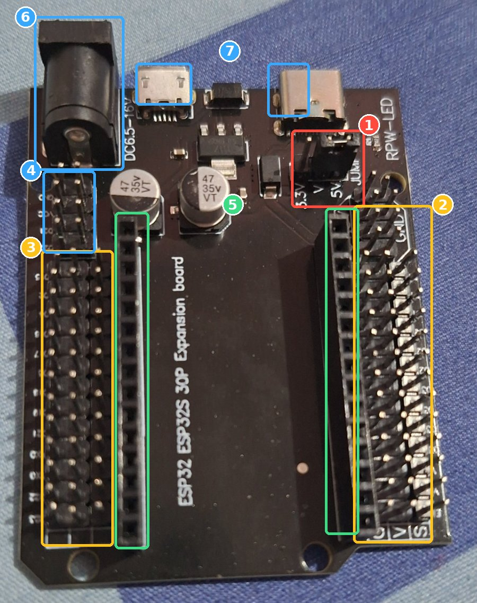

Kenali dulu setiap komponen di kit-mu, pahami cara kerja breadboard, lalu rakit sedikit demi sedikit. Setiap tahap punya kode tes kecil, jadi kamu tahu bagian itu berhasil sebelum lanjut.
Pasang atau pindahkan kabel hanya saat ESP32 mati. Colok USB lagi setelah semuanya dicek.
Garis merah di breadboard untuk tegangan (+), garis biru untuk GND (−). Jangan pernah sambungkan keduanya langsung.
Bandingkan setiap kabel dengan gambar dan tulisan di langkah. Hampir semua kegagalan pemula karena satu kabel bergeser satu lubang.
Semua foto ini dari kit-mu sendiri. Setelah membaca, nyalakan mode tebak nama: nama tiap komponen disamarkan, coba sebutkan lalu ketuk kartunya untuk mengecek.
Di dalam breadboard ada lempeng logam yang menyambungkan lubang-lubang tertentu. Setiap lubang punya alamat: huruf baris (a–j) dan angka kolom (1–30), keduanya tercetak di breadboard-mu. Jadi e3 artinya baris e, kolom 3.
Arah breadboard tidak penting. Yang penting cocokkan huruf dan angka yang tercetak di breadboard-mu.
Jantan = ujungnya berupa pin logam (bisa masuk lubang breadboard). Betina = ujungnya berupa lubang (dipasang menutupi pin).
Warna kabel tidak berpengaruh secara listrik. Tapi biasakan merah untuk +, hitam atau coklat untuk GND, supaya mudah dicek.
ESP32-mu dicolok di papan ekspansi hitam. Setiap pin GPIO punya satu baris berisi 3 pin:
Label di papan ekspansi pakai format D + angka GPIO: GPIO 25 = D25. Penjelasan lengkap papanmu ada di bawah.
Ini papanmu sendiri tanpa ESP32: ESP32 ESP32S 30P Expansion board. Nomor di foto dijelaskan di bawahnya.

Sensor (DHT11, LDR) diberi tegangan dari rel merah, lalu mengirim sinyal ke pin ESP32 dengan tegangan yang sama. Pin ESP32 dirancang untuk maksimal 3.3V. Memberinya 5V terus-menerus bisa merusaknya. Kalau punya multimeter, setelah jumper dipindah ukur tegangan antara pin V dan G: hasilnya harus sekitar 3.3V.
Cabut USB dulu. Hadapkan port micro-USB ESP32 ke arah jack DC dan port USB papan ekspansi (atas), bagian pelat logam ESP32 ke bawah. Cocokkan tulisan D15 di ESP32 dengan baris D15 papan ekspansi. Pastikan ke-30 pin masuk soket dan tidak ada yang tersisa di luar, lalu tekan rata pelan-pelan dengan kedua ibu jari.
Resistor di kit bisa memakai 4 atau 5 gelang warna. Baca dari ujung yang gelangnya berkumpul; gelang terakhir yang agak terpisah adalah toleransi. Kalau resistor 10 kΩ-mu berwarna coklat, hitam, oranye, emas, itu 4 gelang dan nilainya sama persis dengan yang di bawah.
Warna di resistor kecil kadang sulit dibedakan. Multimeter di mode Ω memberi jawaban pasti. Resistor tidak punya kutub, jadi bebas dipasang bolak-balik.
Di setiap gambar, bagian yang baru dipasang tampil terang dan bagian dari tahap sebelumnya tampil pudar. Titik putih = ujung kaki atau kabel yang masuk ke lubang. Kabel boleh bersilangan di atas breadboard, yang penting ujungnya di lubang yang benar. Di HP, geser gambar ke samping untuk melihat seluruh breadboard.
Untuk mengecek ulang rangkaian yang sudah jadi (Tahap 1–5). "Atas" = rel di sisi baris a, "bawah" = rel di sisi baris j.
| Komponen | Kaki di lubang | Catatan |
|---|---|---|
| LED merah | f16 f17 | Kaki panjang di f16 |
| Resistor 220 Ω | g16 g20 | |
| Buzzer | f24 f27 | Kaki di bawah tanda ⊕ di f24 |
| Resistor 100 Ω | h22 h24 | Atau 220 Ω |
| LDR | e10 e12 | Bebas bolak-balik |
| Resistor 10 kΩ (LDR) | a12 + garis biru atas | |
| DHT11 | e3 e4 e5 e6 | Sisi berlubang menghadapmu |
| Resistor 10 kΩ (DHT11) | a4 + garis merah atas |
| # | Dari | Ke | Jenis |
|---|---|---|---|
| 1 | Pin V papan ekspansi (jumper di 3.3V) | Garis merah atas | M-F |
| 2 | Pin G papan ekspansi | Garis biru atas | M-F |
| 3 | Garis biru atas | Garis biru bawah | M-M |
| 4 | j17 | Garis biru bawah | M-M |
| 5 | i20 | S di baris D25 | M-F |
| 6 | j27 | Garis biru bawah | M-M |
| 7 | i22 | S di baris D26 | M-F |
| 8 | a10 | Garis merah atas | M-M |
| 9 | c12 | S di baris D34 | M-F |
| 10 | a3 | Garis merah atas | M-M |
| 11 | a6 | Garis biru atas | M-M |
| 12 | c4 | S di baris D4 | M-F |
Total 6 kabel jantan-betina dan 6 kabel jantan-jantan. Hitung dulu kabelmu sebelum mulai.
Unduh stasiun_cuaca.ino. Isi dulu nama WiFi, password, token bot, dan chat ID di bagian atas berkas sebelum upload. Jangan unggah berkas yang sudah berisi token ke tempat publik.